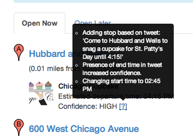

From March 22 through March 29th, I will be drinking sweet rum drinks in 84 degree weather near the ocean without internet access. In the mean time my site will soldier on. It automatically pulls data in from twitter, google calendar, as well as a beacon product (which no one uses). I also manually enter in data I see on trucks’ websites, facebook, emails, etc. The latter is usually done to project a schedule on my site so you can see a truck’s weekly schedule and plan your lunch accordingly.
While I’m gone, I will obviously not be manually editing my schedules, nor correcting any items that automatically get added to my site. Since the twitter parsing can some times lead to wacky results, I’ve added a confidence indicator on my website to every stop that’s added (I added this last week but have been tweaking the algorithm as I’ve seen it perform). You can also hover over the question mark next to the confidence level and it will show you how the stop came to be on my site.

Thanks for using this site and see you on the flip-side.